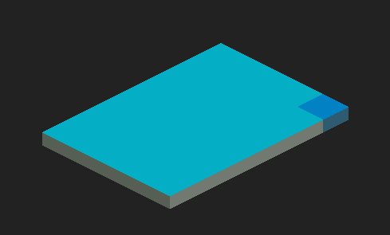

Isometric Map
In this article we are going to go over what is isometric perspective, why do we love it and how to implement it using odin lang. We are going to go over basic math and rendering textures and to finish it off we are going to check out how to make a simple animation with them.
Isometric perspective?
We all like the isometric projection. Many of the games we loved and the games we still love use it. It is still a good way to fake a 3D effect using 2D textures.
I've decided to give it a go and try to write code a little isometric tiling system by myself and I'd like to share how I did it and how one codes animation like this one.
Also I'll do it without using matrices and try to keep it very simple.
Understanding isometric tiling
First and foremost we need to understand how the graphics library we will be using works. Each pixel is being drawn seperately and is based on x and y axis.
The x axis grows by 1 value when we move to the right and the y axis grows by a value of 1 when we move towards the bottom of the screen.
Keeping that in mind we just have to find a way to translate this "Screen space" to the space we want "Isometric space".
To do that let's take a look at the basic isometric coordinate system.
In the picture above we have 4 colored entities. The background line is representing a cartesian system (our "Screen space"), and the three colored arrows represend the 3 dimensions that we want to display.
Now we have 2 axes isoX and isoY that allow us to traverse the ground (tiles) on a certain height they are at. The isoZ axis represents that height, so how high the tile is.
The simplest, most popular idea is that both 1 unit for isoX and isoY axes have the same length and height on our "Screen space".
For now let's take a look at those 2 axes and how a tile would look.
As you can see if we create a lines that mirror isoY and IsoX we get a singular tile.
Now we can move a new tile along the isoX axis.
As seen on the image if we create a tile that is moved 1 unit along the isoX axis then the tile will move to the bottom right.
The value of x on our "Screen space" will increase by half the tiles width and y by the half of the tiles height (remember screens y axis is facing bottom of the screen).
For the isoY axis
Here the situation is similar. The "Screen space" y value increases by half the tiles height however the x value is facing the other direction thus x value decreases by half the tiles width
With this knowledge we can create a simple tiling system and recognize the tiles placement like so.
With that out the way we know most of what we will need to code the system but to finish up with the neccessary knowledge we will add isoZ axis into the mix.
IsoZ axis will allow us to manipulate height but it wouldn't be any good unless we change our flat tile into a 3D tile that incorporates all dimensions.
Just adding the height to the mix changes our flat tile into a cuboid. For the isoZ axis we will assume that 1 unit will be moving our tile upwards by 1 "levelHeight" that is present in the image above.

Now we can have 2 tiles that are directly on top of each other. And the tile that is higher has a higher isoZ value. Also observing this image we can conclude that moving a tile "up" along isoZ axis only changes our tile position on "Screen space" on the y axis and it does so by levelHeight. For this particular example we took levelHeight to be half the tiles height but it can be whatever you would like your tile height to be.
With that out the way the only thing left is to translate this information to code.
Coding it up
Now we have the knowhow of how the isometric tiling works. We just need to translate our "Screen space" location (pixel x,y values) to isometric position (isoX, isoY, isoZ) and then translate it back to iso space.
I'll be using Odin lang and raylib for coding. The language is simple and functions should be descriptive enough. The most important thing that may not be obvious is that ":=" (can be ":type=value") is declaration whereas "=" is assignment.
Isometric to screen
First let's take a look at how we will translate isometric position to "Screen space"
What we know so far is that we have 3 variables isoX, isoY and isoZ.
To get our screens x value we need to combine the knowledge of how each of those variables affect it
increase in isoX = +tileWidth/2, increase in isoY = -tileWidth/2, increase in isoZ = no effect
Thus
x = isoX * tileWidth/2 - isoY * tileWidth/2
x = (isoX - isoY) * tileWidth/2
We will be using struct tileSize. Where tileSize.x represents width and tileSize.y represents height, so
x = (isoX - isoY) * tileSize.x/2
Now analyze screen y value based on iso position variables
increase in isoX = +tileHeight/2, increase in isoY = +tileHeight/2, increase in isoZ = -levelHeight (which we decided in this program will be tileHeight/2)
y = isoX * tileHeight/2 + isoY * tileHeight/2 - isoZ * levelHeight
y = isoX * tileHeight/2 + isoY * tileHeight/2 - isoZ * tileHeight/2
y = (isoX + isoY - isoZ) * tileHeight/2
y = (isoX + isoY - isoZ) * tileSize.y/2
Screen to isometric coordinates
This one is created by simple reversing the previous one.
Math
X part of equasion:
x = (isoX - isoY) * tileSize.x/2
x / tileSize.x * 2 = isoX - isoY
(x / tileSize.x * 2) + isoY = isoX
isoX = (x / tileSize.x * 2) + isoY
Y part (here we need isoY value to substitute it to calculate isoX):
y = (isoX + isoY - isoZ) * tileSize.y/2
y / tileSize.y * 2 = isoX + isoY - isoZ
(y / tileSize.y * 2) - isoX + isoZ = isoY
isoY = (y / tileSize.y * 2) - isoX + isoZ
Back to isoX:
isoX = (x / tileSize.x * 2) + isoY
isoX = (x / tileSize.x * 2) + (y / tileSize.y * 2) - isoX + isoZ
2 * isoX = (x / tileSize.x * 2) + (y / tileSize.y * 2) + isoZ
isoX = ((x / tileSize.x * 2) + (y / tileSize.y * 2) + isoZ)/2
We have the isoX and isoY and this is how it looks in code
Setting up our "game" playground
Now that we have those 2 functions let's play abit with them and see how they work. Next step we would need is to be able to know what tile is under our mouse position so that we can verify that functions work properly.
To get to that first we have to create a odin program with a basic raylib window display.
At first we will create some structs and initialize programs start
Then we need to create a raylib window and create a loop that will render our frames
This should be enough to display a window with our targetFps.
To run program you have to run "odin run ." in the programs folder (for more info see odin-lang website).
Applying isometric functions
Now that we have some graphics we can plug in our previously written traslation functions.
First of all we want to get our "Screen space" position of mouse and to get that we use rl.GetMousePosition() and will will render it at the top of the screen with rl.DrawText().
Next we translate this position to isometric coordinates using ScreenToIsoCoord() we have written.
We need to offest the position by the origin of the tile (it's center) so we do "- tileSize.x/2"
We draw this value onto the screen with rl.DrawText() get this.
Here we see that pixel with coords (509, 372) translates to isoX = 19 and isoY = 4 and thats around the middle so let's draw a tile there
To draw a tile we will need some tiles to render. I've already created some but feel free to create your own. Those are my tiles.
I've split the tiles grid lines from the actual tile. You will later see why
Onto the texture drawing
This one is a bit packed. I've added few things we may want later on.
RenderTile function takes 5 parameters:
pos - position where it should be rendered
tileTexture - texture file it'll be using
textureNr - which texture from texture file we want to use. Default is first one that is not grid
renderWithGrid - whether we want to draw grid around it
highlighted - whether we want to highlight the tile (will be useful for mouse over later on)
The function is self descriptive.
First we locate where in the texture file we will have our tile. Then we get rectangle that represend the whole texture placement. If the tile is to be highlighted we will change it's color abit. now we draw the tile texture with rl.DrawTextureRec(). If we want grid lines around tile we use renderWithGrid flag set to true.
In our game() function we call the renderTile for a position that we want to render it in.
Run our app with "odin run ." and see what happens.
And so we've got our first tile.
Now let's add one more tile and see whether we can get a highlight to work when we mouse over the tile.
To also see whether the grid drawing works we will change the renderWithGrid flag to false in function call. So replace the tile render code to make it look like the following
When when we run the code we should be able to see 2 tiles that change color when we mouse over them
Ok now that we've got it working let's make more tiles with a for loop and we will have ourselves a basic tiling system with a whole floor. So let's change tile render code to following one
And run the code to see whether we have a small floor of tiles we can mouse over
And we've got it. Now to not make it an empty promise I'll show you how to make the animation from the start
The animation
The animation is actually a expansion of what we have written with a bit of isoZ and sin() func.tion
We are going to simply add few floors and make them move along the lines of the sin() function. As you may remember we've already implemented isoZ into our functions however we always called them with a static value of isoZ. Now let's just add another floor (in a very "non clean code" way). So let's rewrite our render code yet again.
Run it.
And so we now have a proof that our code can render many levels. Now we are going to render few levels along the sinusoid.
Instead of doing another loop we just render them 1 by 1. Fell free to play around with those and maybe even refactor it with a "z-index loop".
Few key things we need to know before we understand the implementation. sin() functions or Sines y value reaches 0 every PI. So we need to make it so that all of our tiles have height based on sin() and make it fairly smooth. In the code above you can see "rippleSize" it basically indicates how many tiles we need to reach peak and valley of the sine. We need to simply take the sin() value based on x times the PI divided by how big we want the ripple to be. rippleHeight is a multiplier we are going to use to adjust the height change caused by sin() value of our x.
And it will give us this
And now the final piece. We are going to use sinIter (you may have seen it in our setup steps for raylib and odin at the very beginning of coding section). Now in the game loop we will increment sinIter's value.
sinIter += 1
And include it in our render function like so
Now we've added animationSpeed into the mix which we need to include into our sin() value calculation. By simply moving each tile by a bit based on sinIter we will animate the wave. Now run the code for the one last time.
To have the same effect as at the beginning remove text drawing (rl.DrawText() calls)
Summary
This was a introduction to tiling and I hope anyone who read it gets something from this brief tutorial. I would highly recommend to see the video version of this one.
I'll most likely be doing another post for isometric tiling where we will be Creating and Deleting tiles allowing us to create our own maps.
If you'd like to see the code: